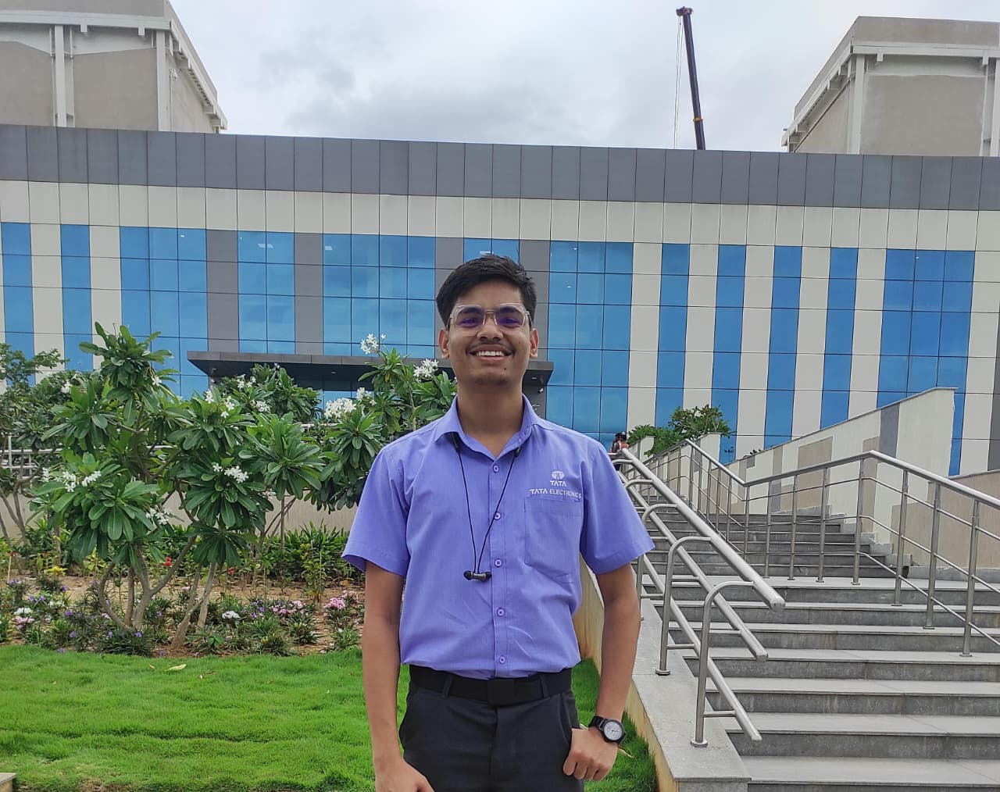

Maya 3.0 - A humanoid Robot
AI-powered humanoid robot integrated with an autonomous mobile platform 🚗, enabling natural voice interaction 🗣️, GPT-based intelligence 🤖, and dynamic navigation for immersive human–robot interaction.
View projectAutomation & Robotics Engineer
Python Developer | Hubballi, Karnataka
I’m Chetan Kamatagi from Hubballi, Karnataka, and I hold a B.E. in Automation and Robotics Engineering. I’m a passionate AI/ML Developer with a strong foundation in Python, Machine Learning, and Natural Language Processing (NLP). I specialize in developing data-driven and intelligent systems that combine automation with advanced analytics to solve real-world problems. I’m deeply motivated to leverage my expertise in AI model development, data engineering, and intelligent automation to create scalable, impactful solutions that push the boundaries of innovation and user experience.
With hands-on experience in Python (NumPy, Pandas, Scikit-learn) and SQL, I’ve built and optimized models that enhance performance and decision-making. As a published researcher, I’ve applied AI and automation in robotics and vision-based projects, showcasing my ability to bridge software intelligence with practical implementation.
KLE Technological University, Hubballi

KLE's C.S. Angadi PU college, Gokak

Modern English Medium High School, Gokak

Tata Electronics System Solutions
Automated daily quality reporting using Python, minimizing manual errors and saving 2+ hours per Week.

Tata Electronics System Solutions
Executed Kaizen and cost-saving projects, achieving total savings of over ₹25 lakhs annually through process optimization. Collaborated with CFT teams to resolve engineering issues, ensuring adherence to quality standards and improved first-pass yield.
Tata Electronics PVT LTD
Supported the automation team in developing PLC and sensor-based control systems for special purpose machines.
AI-powered humanoid robot integrated with an autonomous mobile platform 🚗, enabling natural voice interaction 🗣️, GPT-based intelligence 🤖, and dynamic navigation for immersive human–robot interaction.
View project
Vision-guided collaborative robot capable of dynamically detecting, classifying, and sorting tomatoes based on ripeness using computer vision and real-time control.
View project
Intelligent traffic management system using multiple Raspberry Pi nodes and real-time vehicle detection 🚗🚌 to optimize signal timings for smooth traffic flow.
View project
Smart dishwasher system using sensors and microcontroller-based automation to optimize washing cycles and energy usage ⚡🤖.
View projectSmart India Hackathon 2022
Secured first place in Smart India Hackathon 2022 for developing an AI-based traffic management system using computer vision and IoT integration.
IBM
Gaining hands-on experience with supervised, unsupervised, and model evaluation techniques using real-world datasets.
Rinex
Completed a comprehensive Data Science certification by Rinex, covering data preprocessing, visualization, machine learning, and statistical analysis using Python.
KrishAI Technologies Pvt Ltd
Completed an industry-oriented MLOps certification, focusing on model deployment, CI/CD pipelines, containerization, and production-level ML workflows.